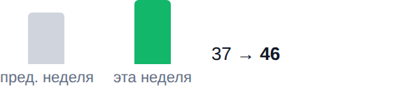
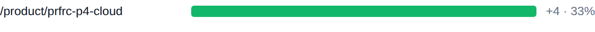
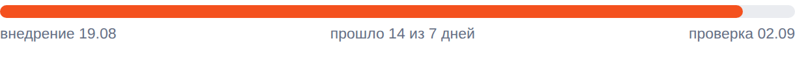

BIZSoft Growth Intelligence Daily Search, Demand & Experiment Control · 02.09.2026 ПОИСК: смешаннаяДАННЫЕ: свереноОТ ВАС: требуется Яндекс по 30.08 · Google по 30.08 · Метрика по 01.09 · спрос 20.08 | Требуется ваше решение CONTENT-001: вердикт ПОДТВЕРЖДЁН, рекомендация — расширить. Ответьте в чате: EXPAND CONTENT-001 (или KEEP/REVERT/EXPAND/EXTEND CONTENT-001). |
| Показатели Видимость в Яндексе 2 212 показов за неделю +565 +34,3% На первой странице 792 из 1007 запросов выборки. CTR 0,41% по всему сайту. 24.08–30.08 · Яндекс.Вебмастер, весь сайт, дневные ряды · достоверность: достаточная |
Видимость в Google 46 показов за неделю +9 +24,3%  Видимость в Google: 37 → 46. Переходы из Google за окно: 1. 24.08–30.08 · Google Search Console, весь сайт, дневные ряды · достоверность: низкая, малые числа |
Органический трафик 13 визитов за неделю −7 Визиты из поиска: весь сайт, все поисковые системы. 26.08–01.09 · Яндекс.Метрика, весь сайт, дневные ряды · достоверность: низкая, малые числа |
Обращения 1 заявка за сутки Заявки воронки сайта: компания, состав запроса и канал каждой — в блоке «Заявки за сутки». 01.09 · воронка сайта (Directus) · достоверность: полный подсчёт, малые числа |
| Сигналы дня Показы в Google за неделю 37 → 46 (+9)Страницы сайта стали показываться чаще. достоверность: достаточная Страницы в поиске Яндекса 464 → 464 (без изменений)Объём проиндексированного сайта не изменился. достоверность: достаточная Запросы выборки на первой странице 830 → 792 (−38)Внутри выборки стало меньше запросов на первой странице. достоверность: достаточная | Заявки за сутки канал определяется по визитам Метрики (ym:s:clientID); при отсутствии визитов — по метке источника в браузере, и тогда выдача поисковика неотличима от его сервисов. Без визитов в Метрике: 1 заявка 1 заявка за сутки на 66 469 ₽; за 7 дней по каналам: Google — поиск или сервисы Google: 1, переход по ссылке — bitrix.informatic.ru: 1, поиск Яндекса: 1. 12:28 · ООО "Дунфэн Трак Рус" Magnific Premium+ (годовая) · 66 469 ₽ · КП № BZ-20260901-85535 · скачивание КП Канал: Google — поиск или сервисы Google Путь: первое касание — yandex.ru / referral; перед заявкой — www.google.com / referral; вход /vendors/freepik; посетитель в счётчике не опознан — заявка пришла без идентификатора Метрики основание: метка браузера · переход с www.google.com | Реклама — Яндекс.Директ расход в деньгах кабинета (без НДС); заявки — цели Метрики (отправка заявки, скачивание КП), контакты — клики по телефону/почте и мессенджер; сверка с CRM по yclid — следующий шаг bs-test-2026-09, за 01.09: 646 ₽ за день, с запуска 2336 из 4 098 ₽ недельного лимита. Claude — 161 ₽, 11 кликов, CPC 15 ₽, заявок 0 · идёт набор статистики Claude Code — 22 ₽, 2 клика, CPC 11 ₽, заявок 0 · 77 кл. без заявок и контактов — кандидат на паузу, решение за вами Midjourney — 0 ₽, 0 кликов, заявок 0, контактов 1 · мало данных (6 кл.) ChatGPT Business — 192 ₽, 9 кликов, CPC 21 ₽, заявок 0 · 41 кл. без заявок и контактов — кандидат на паузу, решение за вами Cursor — 39 ₽, 2 клика, CPC 19 ₽, заявок 0 · мало данных (4 кл.) Adobe — 232 ₽, 26 кликов, CPC 9 ₽, заявок 0 · 37 кл. без заявок и контактов — кандидат на паузу, решение за вами Требует решения: замечены нерелевантные запросы (1 шт., 5 ₽) — наблюдаю, при росте предложу минусы | Что дало изменение Google. Изменение +10 по страницам. Прибавили: /product/prfrc-p4-cloud. накопленное окно 26 дней, сдвинуто на сутки +4 /product/prfrc-p4-cloud 33% изменения  /product/prfrc-p4-cloud +4 Яндекс. Причина изменения пока не определена: разложить его на имеющихся данных нельзя. выборка топ-100 запросов, окно 2026-08-19–2026-08-30 | Контроль эксперимента SEO-EXP-001 · заголовки и блок вопросов на 5 карточках Проверяем: понятнее ли описание страницы в выдаче для того, кто покупает на компанию, и чаще ли по ней переходят Запуск 19.08 · день 14 · минимум для вывода 7 дн. и 500 показов Внедрение: 5 из 5 страниц отдают новый вариант (проверка сайта 02.09). Выдача Яндекса: новый сниппет виден в выдаче у 5 из 5 страниц (замер 02.09), позиции 1–2 — Яндекс переобошёл страницы сам, принудительный переобход не понадобился. Экспозиция: 610 показов из 500 минимальных (порог пройден) · 4 клика · день 14 из 7 минимальных. Старый → новый: CTR 0,38% (окно 06.08–17.08, до внедрения) → 0,66% (окно 19.08–30.08, 11 из 12 дней после) — предварительно ×1,7; позиция 7,2 → 8,0. оговорки: базовое окно из усечённой выгрузки (100 запросов) — клики занижены; текущее окно пересекает период до внедрения: 11 из 12 дней — после Вывод: наблюдаем — экспозиция набрана, ждём контрольную дату. Следующая проверка 02.09. Что дальше: Предложение решения — на контрольной точке 02.09: варианты EXPAND — тираж формулы на следующие карточки по спросу; KEEP — оставить; REVERT — откат; EXTEND — продлить; по предварительным данным вероятен EXPAND (если рост подтвердится статистически); выбор за вами.  Прошло 14 из 7 дней, проверка 2026-09-02. Вердикт контрольной точки: вывод невозможен · уверенность низкая различие CTR статистически неразличимо (p=0.633 при пороге 0.05); наблюдаемый рост +94% меньше минимально различимого при этой выборке (от ×5.8). До: 06.08–17.08, 485 показов, CTR 0.2% · После: 19.08–30.08 (окно захватывает день внедрения), 250 показов, CTR 0.4% · совпадающих запросов 24 · позиция -0.2 · p=0.633 Рекомендация: продлить наблюдение. оставить как есть и продлить наблюдение до следующей вехи; если и она не даст вывода — NEW_TEST с более контрастной формулой. Ещё в работе, выводы по расписанию CONTENT-001 — вердикт ПОДТВЕРЖДЁН (показы кластера выросли на +70% к baseline (20 → 33 показов/день), статья вошла в топ-10 (позиция 5)); рекомендация — расширить. Требуется ваше решение — подробности в веб-отчёте. SEO-EXP-002 — день 13 из 7 · 88 из 100 показов (порог адаптирован) · проверка 03.09 SEO-EXP-003 — день 4 из 7 · 279 из 195 показов (порог адаптирован) · проверка 05.09 PAGES-EXP-001 — день 3 · в выдаче 0 из 7 страниц · ~1 показов/нед из 300 · проверка 06.09 SEO-EXP-004 — день 1 из 7 · 195 из 136 показов (порог адаптирован) · проверка 08.09 |
| Система уже делает Показаны задачи со сменой статуса, блокировкой или сроком в ближайшую неделю | Где ближе всего рост оплата coreldraw для россиян 69 показов по запросу за период, средняя позиция 9.06 — в первой десятке, но без переходов Потенциал: переходы при том же объёме показов — платить за них не нужно Что делаем: переписать заголовок и описание страницы под запрос решение к 26.08 · достоверность: sufficient оплата artlist юридическим лицом 66 показов по запросу за период, средняя позиция 3.39 — в первой десятке, но без переходов Потенциал: переходы при том же объёме показов — платить за них не нужно Что делаем: переписать заголовок и описание страницы под запрос решение к 26.08 · достоверность: sufficient оплата motion array юридическим лицом 63 показов по запросу за период, средняя позиция 3.13 — в первой десятке, но без переходов Потенциал: переходы при том же объёме показов — платить за них не нужно Что делаем: переписать заголовок и описание страницы под запрос решение к 26.08 · достоверность: sufficient | Интерес к вендорам в поиске Интерес в нашей выдаче, не рыночный спрос (его измеряет Вордстат). Depositphotos — 381 показ в Яндексе (лучшая позиция 2.6) Perplexity — 157 показов в Яндексе (лучшая позиция 3.0) CorelDRAW — 145 показов в Яндексе (лучшая позиция 5.0) Проверить платным трафиком: «оплата coreldraw для россиян» (69 показов, позиция 9.1) — конверсионность запросов не измерена. | Спрос и направления развития Замер спроса от 02.09, обновляется по расписанию исследования Мы видим 287 788 покупательских запросов в месяц по 171 направлениям каталога. Своя страница есть под 88% этого спроса, в поиске находится 62%, на первой странице — 12%. Без страницы остаётся 17 778 запросов в месяц — это направления, где спрос есть, а нас в выдаче нет. Ещё 52 137 запросов в месяц не отнесены ни к нам, ни к чужому товару: это голые фразы омонимичных брендов (box — 30 187, zoom — 10 813, bubble купить — 5 732). В спрос и в решения об ассортименте они не входят. 88% есть своя страница | 62% страница в поиске | 12% на первой странице |
Ближайшее направление: google. Страница есть, не индексируется — 19 390 запросов в месяц. Что делаем: техническое SEO. | Перспективные идеи продвижения бесплатные каналы; полный список и статусы — в веб-отчёте Яндекс Бизнес: аудит товарных карточек кабинета — канал уже приносит обращения без бюджета (лид 28.08 из Бизнес-каталога). Факт 01.09: фид /yandex-business.xml открыт, отдаёт 535 офферов и генерируется динамически из каталога при каждом заборе — обновлять его не нужно. Узкое место — карточки в кабинете: полнота, фото, описания | Управленческие воздействия постановки задач по предложениям из шапки; система без вашей команды ничего не меняет 1. Принять решение по эксперименту SEO-EXP-001 Зачем: контрольная точка 02.09; предварительно ×1,7 по CTR кластера (610 показов). Что делаем: прочитать панель вердикта в письме контрольной даты (вердикт, уверенность, p-value, рекомендация с целевыми страницами) и ответить в чате командой. Приёмка: решение зафиксировано в журнале решений экспериментов. От вас: одна команда 02.09: EXPAND / KEEP / REVERT / EXTEND SEO-EXP-001. 2. Переписать сниппеты под 3 запроса с показами без переходов Зачем: «оплата coreldraw для россиян» — 69 показов по запросу за период, средняя позиция 9.06 — в первой десятке, но без переходов; «оплата artlist юридическим лицом» — 66 показов по запросу за период, средняя позиция 3.39 — в первой десятке, но без переходов; «оплата motion array юридическим лицом» — 63 показов по запросу за период, средняя позиция 3.13 — в первой десятке, но без переходов; запросы страниц активных экспериментов (оплата coreldraw для россиян, оплата artlist юридическим лицом, оплата motion array юридическим лицом) — после вердикта, чтобы не смазать оценку. Что делаем: для каждого запроса: переписать title целевой страницы под запросную формулу (≤65 символов, штатный слой src/lib/seo.ts), description ≤160 с оффером «счёт, договор, ЭДО», добавить вопрос в FAQ-блок; изменения — отдельным PR с частотностью по каждой правке, мерж ваш. Приёмка: по каждому запросу появились переходы (CTR > 0) в течение 14 дней при позиции не хуже исходной ±1. От вас: команда «делай сниппеты» — подготовлю PR в тот же день. 3. Расширение линейки: решить судьбу кандидатов с замеренным спросом Зачем: у 3 кандидатов (nordvpn, ansys, hailuo) спрос подтверждён, но платёжная схема не опознана автоматически. Что делаем: по ручным: проверить оплату на сайтах кандидатов и вернуть вердикт в исследование; параллельно исследование продолжает замерять остальных кандидатов вне каталога. Приёмка: каждый кандидат получает статус: заведён / отклонён (отклонённые больше не предлагаются). От вас: решение по каждому после проверки. 4. Яндекс Бизнес: аудит товарных карточек кабинета Зачем: канал уже приносит обращения без бюджета (лид 28.08 из Бизнес-каталога). Факт 01.09: фид /yandex-business.xml открыт, отдаёт 535 офферов и генерируется динамически из каталога при каждом заборе — обновлять его не нужно. Узкое место — карточки в кабинете: полнота, фото, описания. Что делаем: в кабинете Яндекс Бизнеса сверить число товарных карточек с 535 офферами фида; у топ-20 карточек по спросу проверить фото и описания; включить сбор отзывов первых клиентов (связано с GI-003). Приёмка: карточки кабинета совпадают с фидом, топ-20 оформлены, первый отзыв получен. От вас: доступ к кабинету Яндекс Бизнеса или подтверждение, что аудит делаете сами. | Здоровье данных Сверено: охваты сопоставлены: KPI считаются по всему сайту Показы и клики Яндекса, показы Google, визиты Метрики и сессии GA4 считаются по всему сайту за окна равной длины. Выборка запросов используется только в разделе возможностей и на KPI не влияет. Показы и переходы Яндекса относятся к весь сайт, визиты Метрики — к весь сайт и ко всем поисковым системам сразу. Сопоставлять корректно показы с переходами одной выборки, а визиты Метрики — с сессиями GA4. Конвейер: просрочено 1 контур: Выгрузка заявок воронки — последний прогон 01.09. |
| Следующие проверки 02.09 — SEO-EXP-001: замер кликабельности изменённых страниц 02.09 — CONTENT-001: замер кликабельности изменённых страниц 03.09 — SEO-EXP-002: замер кликабельности изменённых страниц До этих дат выводы по эксперименту не делаются: данных выдачи за более короткий срок недостаточно, чтобы отличить эффект от обычных колебаний. | | Полный отчётЖурнал работ |
|